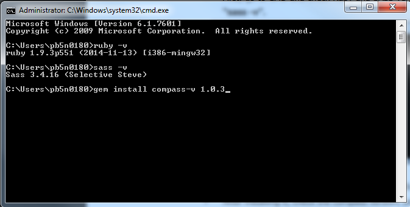

Theme Name: Perfect Melt
Theme URI: http://localhost/wordpress/
Author: Perfect Melt
Author URI: http://localhost/wordpress/
Creator: Jerald Gutierrez - (Cousin of Perfect Melt owner)
Description: This is Perfect Melt By Kay
Version: 1.0.0
Tags: bootstrap
Image Source: https://www.google.com/
Set Title: Perfect Melt By Kay
Database name: wp_perfectmelt
Username: admin
Password: perfectmeltbykay0929
Local Configuration
Pages
-
Title: Sign Up
Template: Sign Up page
-
Title: Login
Template: Login page
-
Title: Home
Template: Index page
-
Title: Desserts
Template: Desserts page
-
Title: Rice Meals
Template: Rice Meals page
-
Title: Blog
Template: Blog page
-
Title: About Us
Template: About Us page
-
Title: Contact Us
Template: Contact Us page
Installation for configuration of SASS file.
- Install Ruby 1.9.3 by double-click the .exe file or run it as Administrator
- Check all the checkboxes during installation and when finished, click OK.
- Note:Main purpose of installing Ruby software is for the installation of SASS.
- After installing Ruby 1.9.3, proceed in installing SASS. First, go to CMD.
- Then, check the Ruby version to make sure the required version is the one installed. By doing this, type “ruby -v” in CMD. It must result like this:
- To install SASS, type in CMD, “gem install sass”. Wait until SASS installation finished.
- After installing it, check the sass version, just type “sass –v”. It will show this result.
- To install Compass, type in CMD, “gem install compass –v 1.0.3”. Wait until Compass installation finished.

- After installing it, check the compass version, just type “compass –v”. It will show this result.
- To install Susy, type in CMD, “gem install susy –v 2.2.5”. Wait until SUSY installation finished.
- After installing it, check the compass version, just type “gem list”. It will show this result.
Create and Run SASS file.
How to create SASS file
- Open CMD.
- Go to project path.
- Type in CMD, “compass create sass” and will automatically generate the SASS file.
How to do COMPASS WATCH with SASS:
After the installation of Ruby 1.9.3, Sass 3.4.16 and compass 1.0.3, doing the “compass watch” is the next step to completely do SASS coding. Follow the steps below:
- Open CMD.
- Go to project path.
- Watch the changes, just type in CMD, “compass watch”. When the CMD outputs “watching for changes”, it means that it is now ready and waiting for the SCSS file modification.
- Save the SCSS file and will automatically generate the CSS code.